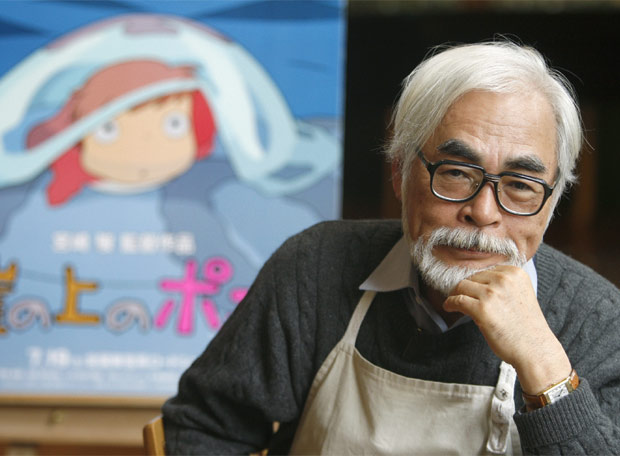

Hayao Miyazaki (1941-)

- Manga writer, film director,
animator, poet
- Other pennames: Saburo Akitsu,
“Tereko mu” (å “telecom”)
- Interested in manga, later
animation
- Political science and economics at
Gakusyuin Univ.
- Worked at the Toho animation,
Secretary of Toho animation Labor
Union (very active)
- Announced his retirement from
making movie theater films upon
completion of The Wind Rises –
retracted 2017 (??]
The now penultimate feature film The Wind Rises (2013)

- Family background: Myazaki
Airplane
- Admires Antoine de Saint-Exupéry
- Memory of air raids and his family
evacuating and abandoning
others – strong pacifist stance
- The Wind Rises – he was praised
as well as criticized (”anti-
Japanese, traitor”)
- Criticism of Japan’s war crimes
Miyazaki: Strong opinions
- Japanese animation is at a “dead end” (lack of
originality, mixed opinions about Disney animation)
- Family background: Against the amendments to the
Japanese Constitution on arming the country
- Leftist ideas (reservations re: communist countries)
- Critical of the War against Iraq
- Harsh criticism of nationalists in Japan
- Criticism of the movie the Lord of the Rings
(antagonists depicted as Asian-like faces) (and
Hollywood movies where Germans are villains)
- A one-person march: Anti-nuclear power (right, M
put up the same message on top of Studio Ghibli)

Films
- Takahata, I. 2013. Kaguya Hime [Princess Kaguya] (2013)
- Zeman, K. 1967. The Stolen Airship
Readings